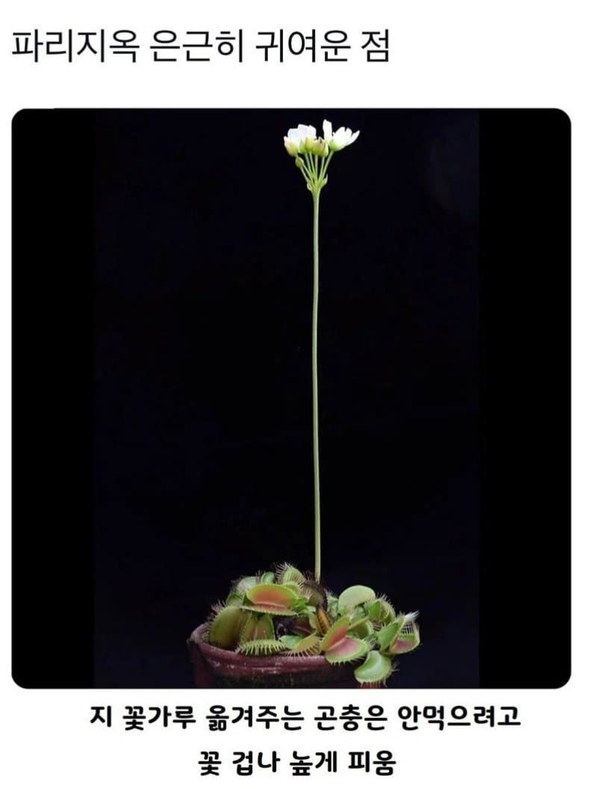

ㅋㅋㅋㅋ

ㅋㅋㅋㅋ
저 지옥 부분이 원래 저렇게 무더기로 있는거였어??
식물 하나에 지옥 하나 있는게 아니고?
이파리가 변형된거라 다른 식물의 이파리만큼 있지
거긴 아니야아아아앗 꺼흑
맛은 굉장히 안정적이야..
꽃이 식물의 생식도구니까 X지나 X지라는 글을 본 기억이 있다...
식물도 ㅈ이 커야 살아남는구나...
ㅋㅋㅋㅋㅋㅋㅋㅋㅋ
???? : 쟤 머거도 대여?
???? : 쟤는 안대....
자연산 거근이라는 얘기네
분명히 퍼리지옥이었는데
지금 파리지옥맞네 ㄷㄷㄷㄷ
낮게 피운애들은 전부 교미못하고 가버렸거든